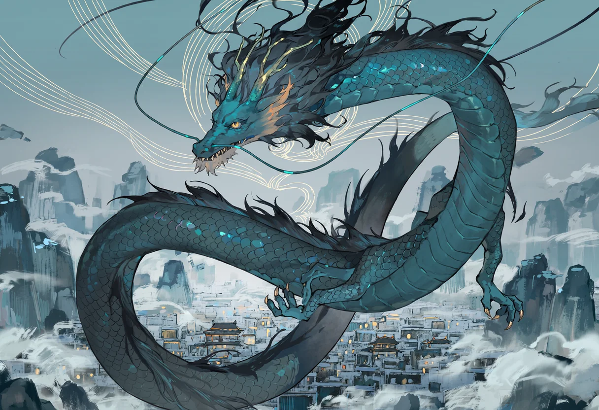
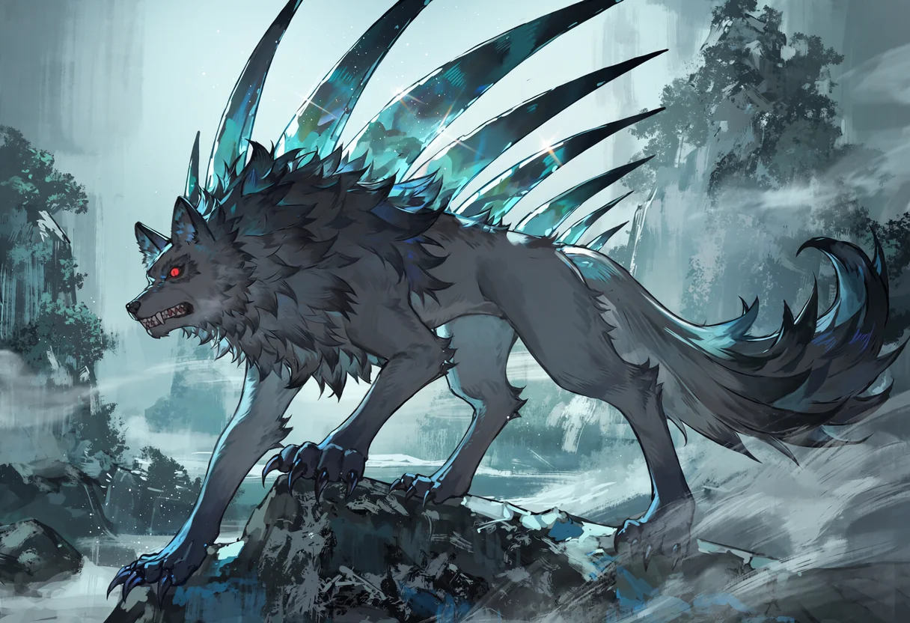
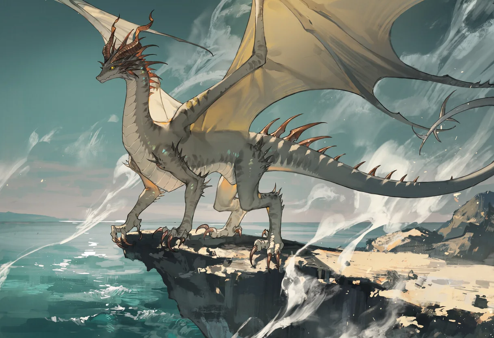
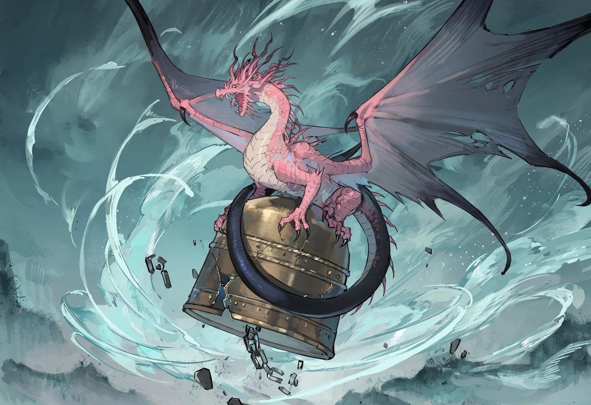
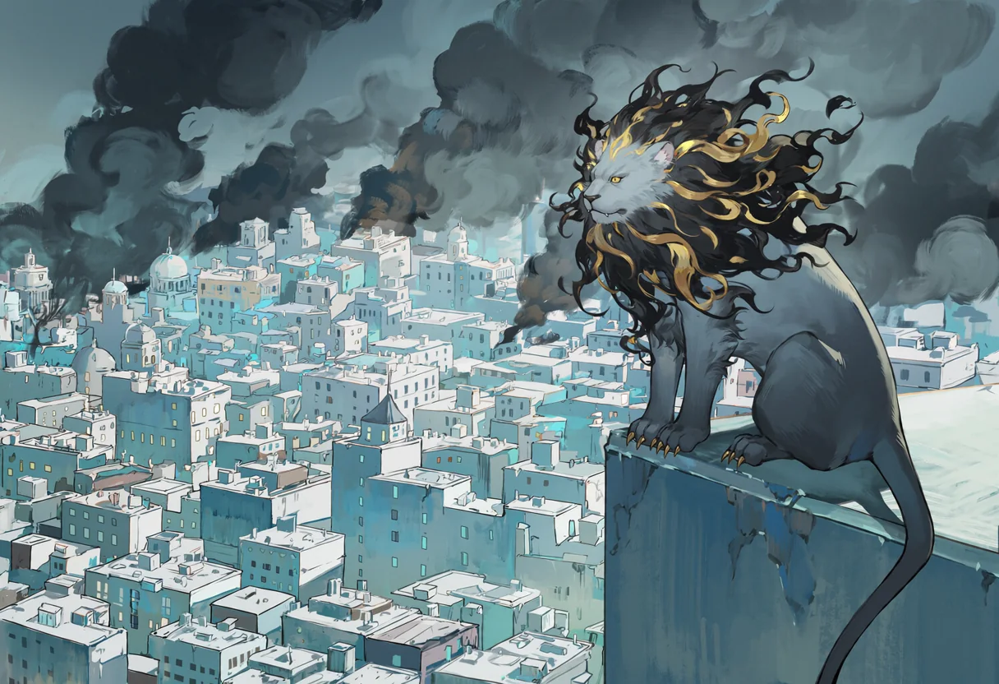
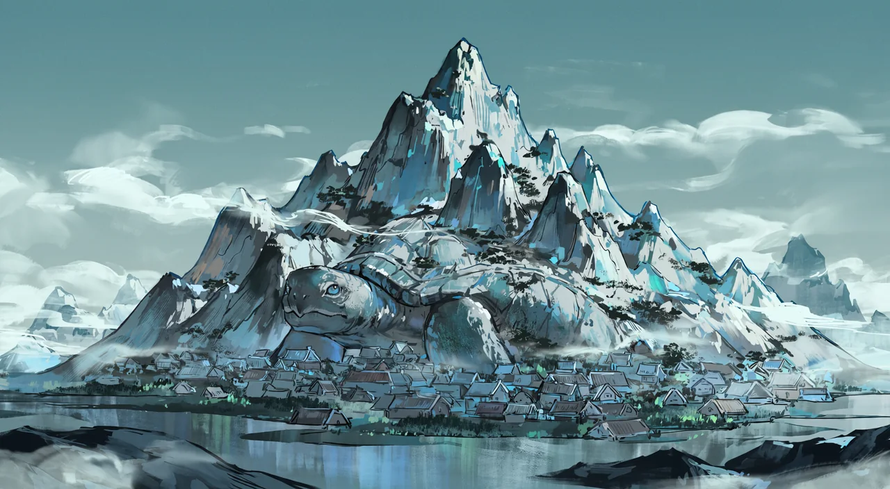
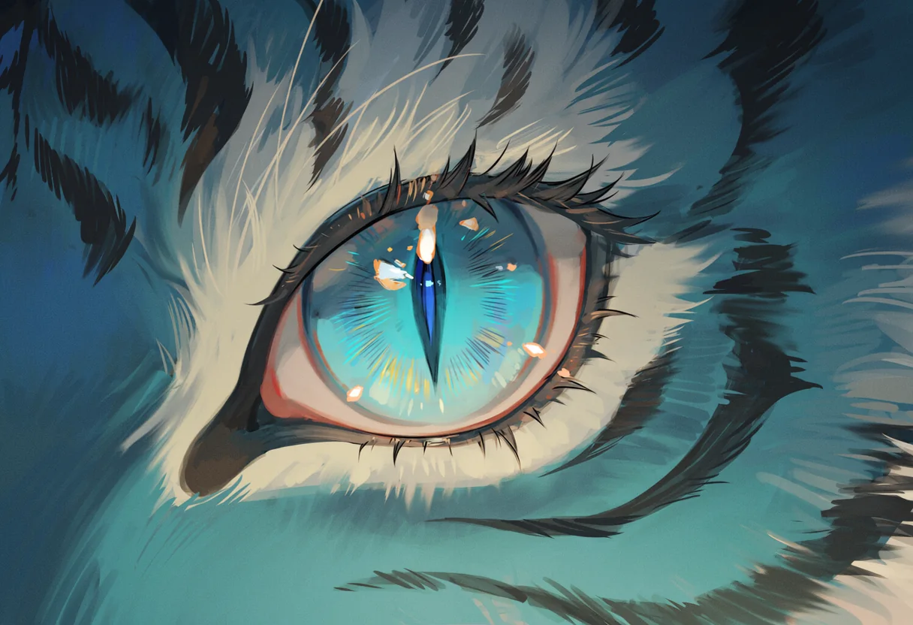
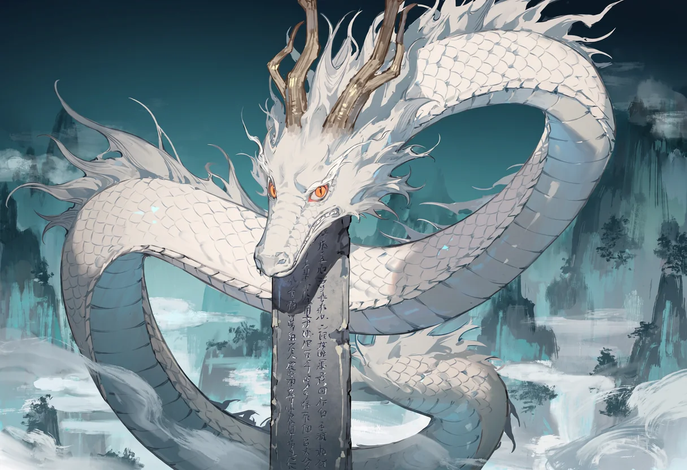
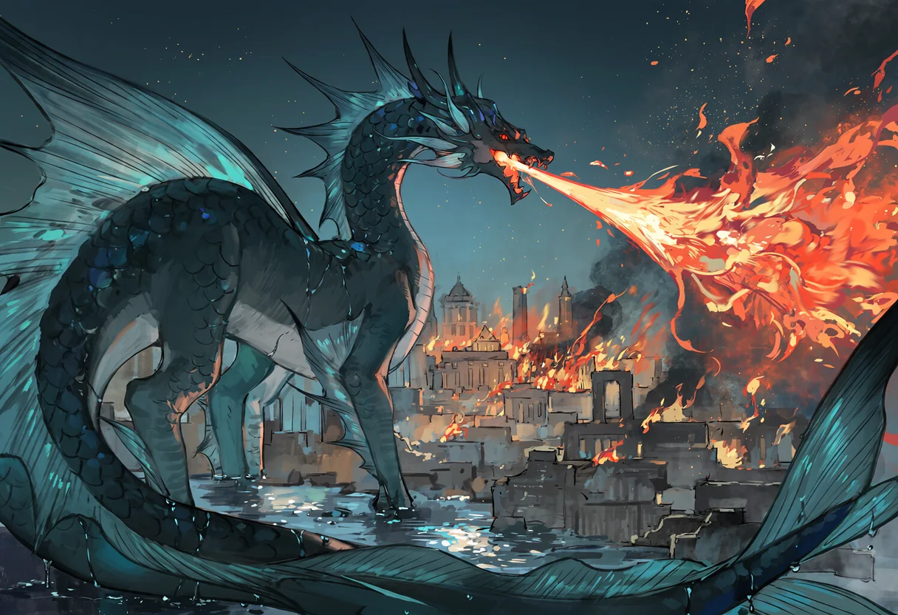

《初契錄》殘本十二卷
存：藏書樓第一架可借閱（抄本）
遠古時，龍王的龍威溢出水府，大水漫過山河，田地、村落與道路都沉在水底。宗門初祖率眾求見龍王，談了一場很長的判：人族世代供奉龍王九子，龍族收斂龍威，九子鎮守這片土地。
龍王覺得九個兒子有本事，但難管，正好需要人來管；他大筆一揮，把九個全寫進了契約。這就是初代龍契。
龍契是雙向的神契：宗門以供奉養九子的神性，九子以神通護這片山河。它不是奴契，也不是婚契。
點書架上的東西，就翻到那一卷。
親愛的，目錄只告訴你書在哪裡，不告訴你書裡寫了什麼。這是藏書樓的老規矩，也是我的。
這座樓歷代整理過好幾回，這一回輪到我。能說的，我都按卷放上架了；找不到的，多半是還沒輪到你看。
慢慢來。三十天很長，書不會跑。
——負屭 容觀復 於東院書齋，茶涼了兩次觀復
遠古時，龍王的龍威溢出水府，大水漫過山河，田地、村落與道路都沉在水底。宗門初祖率眾求見龍王，談了一場很長的判：人族世代供奉龍王九子，龍族收斂龍威，九子鎮守這片土地。
龍王覺得九個兒子有本事，但難管，正好需要人來管；他大筆一揮，把九個全寫進了契約。這就是初代龍契。
龍契是雙向的神契：宗門以供奉養九子的神性，九子以神通護這片山河。它不是奴契，也不是婚契。
原件早已不存，現存的是數千年間一抄再抄的本子，各卷說法不太一致。當年在場的見證者還活著一位：水族的潮七公。他喝醉時講的版本最精彩，可信度另計。
宗主之位的承繼，看的是血脈中與龍契的共鳴，不看年齡、性別、財產或長幼。歷任宗主可以預先培養繼任者，但最後由祖堂的龍契石壇確認。宗主出缺時，石壇會在歲末指向下一位。
宗主可以決定的：祭儀與供奉的安排、宗門公共財產與重大修繕、訪客與開放場所、員工的重大任免、是否擇主。
宗主不能決定的：九子的私產、職業與情人；九子是否愛上自己；九子的私人行動；以及無視神契處置鎮守之地。
宗主是管理者與承契者，不是九子的主人。
龍王是九子的父親、初代龍契的訂立者，龍威遠在九子之上，能干涉廣大的水域與山河靈脈。他把兒子們交給宗門，一半是停息水患的交易，一半是想讓他們學著跟凡人相處。
他平時不管宗門，不替兒子收拾麻煩，也不當家務爭執的裁判，從不親自出場。偶爾透過水族使者或潮七公一類的舊交送消息；春節可能送來一箱海底古物、幾株深海靈草，或一封只有九子看得懂的短箋。
這一函收的是歷年短箋，內容多半是「知道了」「別鬧」與天氣。最長的一封有九個字，我們九個各讀出了不同的意思。
祀典師高先生手抄，原樣夾存。
謹按歷代祀典，錄龍契諸儀於後，以備新任宗主覽閱。文辭從舊，宗主見諒。
宗主之位出缺，祖堂龍契石壇於歲末顯紋，指向承繼之人。宗門於歲首前將其請回鎮瀾院，正月初一正式接掌。
新宗主繼位，九子須全數返回鎮瀾院，與宗主同住三十日，以正月初一為第一日。白日九子可自由工作、外出、會友，晚間原則上回宅。無論擇主與否，皆十人同居。
宗主若久離香江，儀程暫停，已滿之日不作廢。龍契不以囚禁或傷害強行履約。
宗主可擇一位龍子為本代主奉。其儀：宗主於九龍祖堂，為所擇之龍子上香，於龍契之上落硃砂筆，由祀典師唱名。三十日內，宗主擇定之日即可行儀，不必拘於初一。
主奉負責主要陪伴，優先承接宗主個人之供奉；其餘八位照常同住、照常起居，亦得與宗主各自往來。擇主所定者，供奉之序與輕重而已：不定去留，不予主奉獨佔、婚配或親近之權。擇與不擇、擇誰，唯宗主自決，旁人不得代擇，宗族長輩亦然。
宗主未擇主者，即為九子共契，九位共承陪伴之責。誰得閒、誰正要出門，皆可能請宗主同行。
宗主承契之後，身有靈力，能與九子相應。靈力之傳遞，可經焚香、祝禱、樂音、儀式、陪伴，以及雙方自願之親近（此條歷代祀典師皆略過不講，本人亦然）。親近非履約之必要，亦不保證勝於祭拜。
主奉得較多個人供奉；其餘八位由祖堂共祭取得基本靈力。靈力用以維持龍契、滋養神性、支應鎮守山河之耗。九子不因數日缺供而衰弱，宗主不必驚慌。
九子各有所好，祀典未載，宜問本尊。
違契之時，龍契先示警：靈紋異常、供奉失衡、神壇鳴響。九子故意毀壞所守靈脈者，相關神通受限，須自行補救。宗主一時失誤，補行祭儀即可，不致受傷。
第三十日，祖堂行承契完成之儀，儀簡，不必盛服。儀畢，同居之約解除，九子去留各隨其意。宗主仍為宗主；三十日乃承契之始，非其終。
右錄八事，皆祀典所載。
歲次臘月 高仲儀 謹錄仲儀
（祭典記背面有茶漬一圈。）
現代仍有神獸、山鬼、狐妖、精怪等非人族類，大多數普通人不知道他們存在。非人之間沒有統一的政府，靠各地舊約、地盤、血脈與人情維持秩序；他們在人間經商、戀愛、交友，不全是好人，也不全是壞人，年紀越大，倫理觀越不像人。
遮蔽術。九子在外收起角、尾、鱗，偶爾露出一點，微弱的遮蔽術會讓普通人當成飾物、造型或光影。遮蔽不控制記憶，對拍攝設備與強烈的神通未必有效。
現代身分。九子都有合法的身分與工作紀錄，長生靠長週期更換身分、交接產業處理。長期認識他們的人類，多半只知道他們來自同一個古老家族。
鎮瀾院的位置。在非人世界裡，鎮瀾院是受龍契保護的古老宗門祖地，不是非人社會的首都。非人訪客進宅須通報身分與來意，由何伯登記姓名、來歷與禮物；任何訪客不得在宅內施展大規模幻術、鬥法或破壞封印，九子的朋友也一樣。

九子同框的罕見影像，攝於某年元宵。拍攝者事後換了三支手機。
下列體長皆為收斂原身時的尺寸，施展神通時靈相可再擴大。九子在祖堂與後山不宜完全化形；上一次有人這麼做，祖堂換了一根樑。


















鎮瀾院位於新界元朗錦田偏僻的山緣，一條私人山路通往錦田市區，周邊是圍村與宗祠林立的傳統村落。外表古老，住起來很現代：
部分空間不合普通建築原理。有一條走廊，量三次長度都不一樣。
點圖上任一區域查看說明。
名帖依歷年拜年登記整理。親族的姓氏隨宗主家族，這裡只錄名字。年禮一欄照何伯的登記簿抄，他寫得比我詳細。
很講輩分，古板愛面子，熟悉祭儀，年年來祖宅拜年，愛指點年輕人；下一秒又得對宗主行正式的宗門禮。
知道多少：知道龍契，但沒見過九子所有的原身。
備註：最怕霍無咎。可以提建議，不可替宗主擇主。
年輕時住過祖宅，嘴巴厲害，愛打麻將，會派利是，也會問工作、生活與戀愛，但不把婚姻當繼位條件。會跟白懷石討論蘿蔔糕好不好吃。
知道多少：完全知道九子。
現實，對祭拜沒興趣，對老宅資產與維修費很有意見，會認真問土地不開發合不合理。
知道多少：知道部分宗門秘密。
講話直接，愛拍照、排聚餐、打聽八卦。在商業活動見過祝鳴珂、在夜店見過殷照夜，沒想到兩人都是「老宅那邊的親戚」。
知道多少：不知道龍契真相，只知道宗門是古老大家族，供養著幾位特殊人物。由何伯安排接待範圍。
少數能跟宗主正常吐槽的晚輩，有點欠揍，但願意幫忙。曾替祖宅裝智慧門禁。
知道多少：知道九子不是普通人，不清楚他們的神通。
過年來吃糖、拿利是。最喜歡祝鳴珂，會問白懷石是不是巨人、晏清徵頭上為什麼有角、岑歸岫是不是在屋頂養鳥。
知道多少：完全不知情。
跟梁玄度、晏清徵較熟。拜年總帶藥材，提醒九子別把人類當成跟自己一樣耐折騰。
知道多少：知道九子真身。
與容觀復、顧昭衡長期合作。曾替祖宅修復古碑，看見了不該存在的文字；知道一些事，很懂得閉嘴。
知道多少：知道九子真身，也知道哪些話不該問。
霍無咎的朋友兼合作夥伴，只覺得這男人天生是怪物。自己一年年變老，霍無咎卻從不需要解釋。過年帶妻子孩子來拜年。
知道多少：完全不知道霍無咎的真身。
非人多用幾百年的稱呼，未必是真名。
曾在龍王麾下管一段水域，見證過初代龍契。人形是灰白長鬚、背微駝的老翁，拄黑木拐杖，暗金眼，背有龜甲紋；本相是背甲布滿海水蝕紋的古鰲。
愛喝酒、愛抱怨、愛講「想當年」，最愛罵霍無咎與祝鳴珂。
年禮：海底舊物、珍珠，和他自認好喝的酒。
依附山林靈脈而生，能與草木土石交換感知。人形約三十歲，烏黑長髮、琥珀眼，穿棉麻長裙，髮間偶爾長出嫩葉。嘴尖，愛挖苦，看不起只會講環保卻分不清樹種的人。
年禮：新春植物。每年順便檢查後山有沒有被亂挖。
本相是六尾白狐，擅幻術與辨古物真偽。人形約三十五歲，深茶色長髮、淺金眼，戴眼鏡，穿著講究。古董商與拍賣顧問，精明、愛錢、口才好，消息靈通。
年禮：名茶、古董，以及不請自來的估價表。想看新宗主肯不肯出售藏品。
原本鎮守另一座古廟。人形約四十歲，矮壯，灰短髮，皮膚偶現石紋。愛吃、曬太陽、喝茶，固執，看重守門的職責；敬佩白懷石。喝醉就抱怨自動感應門。
年禮：兩盒普通杏仁餅，和一塊重到要特殊搬運的鎮門石。
本相是巨大的蜃獸，能以霧氣短暫重現昔日景象。人形約四十歲，銀灰長髮、紫灰眼，愛珍珠。高傲、懶散，愛看人間熱鬧，對人類有興趣但不一定同情。見過很多代宗主，不會因為誰是宗主就喜歡誰。
年禮：一面能短暫重現舊景的蜃鏡。元宵可能在庭院投映舊時代的燈景。
以下九件，管理宅務時遲早會碰到。本卷只登記品名、存處與經手限制，其餘不錄。